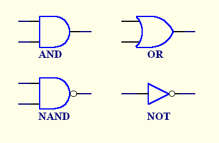
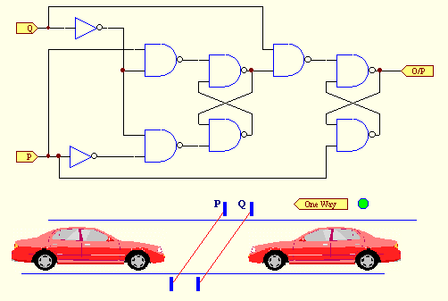

A few basic ideas including an actual working circuit will be presented in a graphical manner with the help of animated GIF images. No attempt will be made to describe any theoretical concepts. Of course the theory is what allows a designer to produce useful digital circuits, so you would need to know more about that if you wanted to design digital circuits yourself. Digital design is a bit like a Chinese puzzle box, it looks very difficult at a casual glance but is (relatively) easy if you know how. You will have the opportunity to call up the animated GIF files separately when you are ready to see them.
The first clue is that we are talking about a special type of electrical circuit. This type of circuit is entirely constructed from a small number of different types of building block circuits. Each of these circuits has one or more input connections and one output connection. The signals that we apply to the inputs and can observe on outputs, with a test meter, have a special characteristic. The signals are always at one or the other of two voltage levels. To simplify matters we will think of these voltage levels as either high (voltage) or low (voltage). We call these signals logic signals and the circuits themselves logic circuits. As an alternative to calling the signals high or low we can call them true or false respectively when we think of the circuits as logic circuits.
| Historical digression. We call these circuits logic circuits because the theory that we use for describing them was invented by a mathematician who developed the mathematical theory of logic. The mathematician was George Boole who published his book "An Investigation of the Laws of Thought" in 1854. Boole's concepts became a formal way of arguing about mathematical fundamentals. In the 1930's Claude Shannon realised the significance of this theory for the description of relay and switching circuits and wrote his thesis on the application of this concept to switching circuit design. His account of his thesis "A Symbolic Analysis of Relay and Switching Circuits", Trans. A.I.E.E., vol 57, pp 713-723, was published in 1938 for the benefit of the engineering community. Shannon's paper makes quaint but insightful reading with today's hindsight. Of course in those days telephone exchanges used mechanical relays, which was a major application for this development. The technology that we use now came along in 1948 when Brattain, Bardeen and Shockly at the Bell Telephone Laboratories published their invention of the transistor and not long after in 1959 when planar transistors were produced. This has started the revolution in integrated circuits that has accelerated the automation of information technology that we enjoy today. The theory that has developed, from Shannon's original contribution, in the intervening years is just as applicable to today's logic circuitry as it is for relay and switching circuits. |
So now we have arrived at the understanding that we have building block circuits in which all signals are either at the high (true) voltage level or the low (false) voltage level and can make near instantaneous transitions between the two levels.
The building block circuits with more than one input are called gates, whilst a building block circuit with only one input is a buffer or an inverter. We call the many input circuits gates because of the way they allow or prevent a signal from passing through. We will only consider 2-input gates but gates can have as many inputs as are needed. The buffer circuit simply boosts the driving power of a signal of whatever polarity without changing the polarity so that it can drive many more inputs to other circuits, whilst an inverter changes the signal level from whatever the input signal level is to the opposite signal level on its output. When we draw symbols for the circuits we will represent the operation of inversion by a small circle usually on the output side of the symbol.
|  |
| Figure 1. Symbols for some of the basic logic gates and the inverter. |
The behaviour of the AND gate is such that the output remains low whilst either or both of the inputs is low and goes high when both inputs go high. In other words, in the AND gate, the first input AND the second input must be high for the output to go high.
The behaviour of the OR gate is such that the output goes high as soon as either or both inputs goes high. In other words the OR gate output goes high if the first input OR the second input or in fact if both inputs go high. AND gates together with OR gates and inverters are sufficient by themselves, at least in principle, to create the logic part of any desired digital circuit. However, there are several other gate types that are useful to digital designers. One other such circuit is the NAND gate which we will need for the demonstration circuit. In the demonstration circuit we will only use 2-input NAND gates and inverters.
The behaviour of the NAND gate is similar to the AND gate except that the output goes the opposite way to the AND gate. The output of the NAND gate is high as long as either or both inputs are low and goes low when both inputs are high. You can see from the symbol for the NAND gate in Figure 1 that the NAND gate is shown as an AND gate followed by a NOT.
In the animation a high signal is coloured red and a low signal is coloured green. You will see all the possible combinations of inputs on each gate and the resulting outputs of the gates. Look at each gate individually until you get the idea of how it works.
Click on Figure 1 to see the animation.
A complete circuit to show you what can be done Now that you have got the idea of how the gates work I will show you a circuit to demonstrate something working. You can follow how it works through the animation and relating what you see to the way the gates work. In fact, after setting the scene for you, I will leave you to follow it through. You may need some persistence to do this thoroughly but that is the nature of the way it is. Digital design theory offers better ways of dealing with these circuits.The concept of the example is somewhat simplified for the sake of the exposition. The idea is to detect a car going the wrong way down a one way street. The two light beams across the road give low signals to the P and Q inputs until a car breaks the beams. When a beam is broken the input to the circuit goes high. This is performed by additional circuitry not shown in the diagram. The warning light is assumed connected to the output of the circuit and changes from green to red when a car is detected going the wrong way down the street.
Follow how the signals propagate through the circuit in response to the signals generated by the beams as they are broken and restored. Use the rules for the gates described earlier to see what is happening in the circuit. The same arrangement as before is used where a high signal is shown in red and a low signal is shown in green. I have allowed 10 seconds per step in the animation and slightly longer between repetitions so get your bearings during the first 10 seconds whilst you wait for the animation to start. Click on one of the cars in the Figure 2 to see the animation for the car going in the direction that the car is pointing in.
|  |
| Figure 2. The circuit for detecting the car going the wrong way down the one way street.Click on a car to see the animation for the car going in the direction that the car is pointing in. The P and Q signals are connected to the P and Q inputs of the circuit and the green light is connected to the output. Watch when this light changes to red. Whilst you are looking at the animation try to follow the signals propagating through the circuit using the rules for the gates. When you want to return here click the browser's BACK button. |
What else should be said?
I should put in a bit of a disclaimer here. The circuit shown is not intended to be the ultimate solution to any particular problem. The example circuit is intended purely to give the reader something to try out the ideas presented. The idea of cars travelling down a road is simply to make it sound more interesting. There are nearly always alternative solutions possible to any given problem. A student would be expected to investigate other possible solutions and consider the merits of any solutions found. If you were going to study digital design with a view to becoming a designer you would not actually start with a circuit like the one shown. Quite a lot of ground work is needed before this type of circuit is studied.
The idea of using light beams across the road to detect cars passing is also not a good idea but simplified the preparation of the drawings. Loops under the road with suitable detection equipment would be a better idea. These would be less prone to interference by passing pedestrians. Any actual design problem requires a great many considerations relating to implementation to be thought through before it becomes an acceptable solution.
If you would like to make a start with the theory you can read an introductory article on Boolean Algebra by following the button below. This article is intended to provide the background required for the remaining articles. One omission from this article that you might need to properly understand the subject is a discussion of binary numbers. Most beginning books on digital design give the necessary explanation of number systems. The Boolean algebra article became too long for a single page so I have split it over two pages.
Return to the Articles page OR Navigation menu at the top of the page OR Continue with the Introduction to Boolean Algebra: